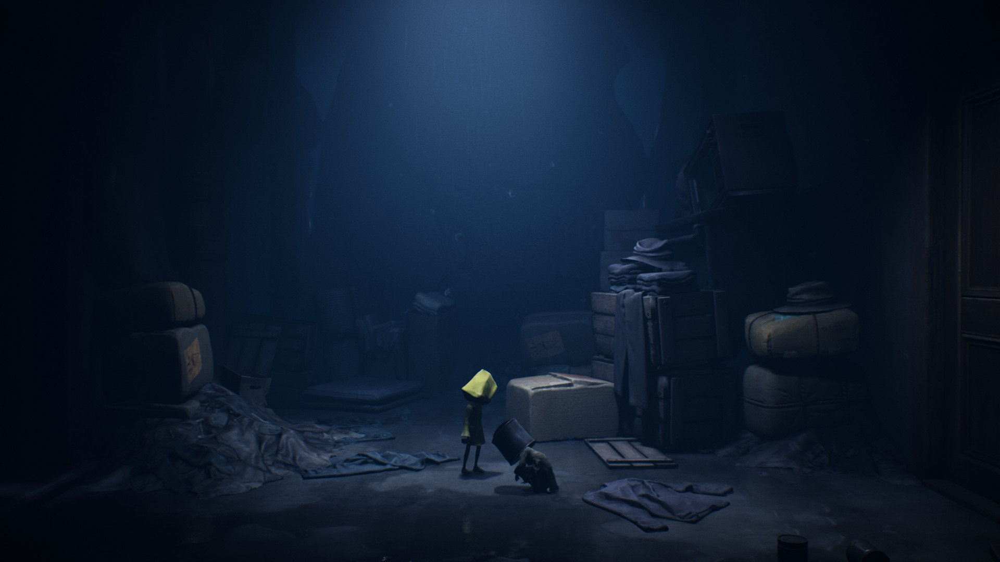

Doomed by the Narrative: A reflection on Little Nightmares II and the child protagonist
Little Nightmares II is game produced by Tarsier Studios as a prequel to their previous game in the series Little Nightmares that follows the
journey of a small boy known as Mono as he adventures through a desolate place known as The Pale City. In contrast to the previous game, which had only a single protagonist,
early in his journey Mono gains the trust and companionship of another child known as Six, non-playable character who provides aid to Mono in his journey. Notably, Six
was the protagonist of the previous publication in this series and begins the journey without her iconic yellow raincoat, finding it amongst the ruins of the city and
firmly establishing the plot of Little Nightmares II as taking place prior to the events of the first game.

A picture of Six (left) and Mono (right) in an abandoned building in the Pale City
Throughout the game, Mono and Six not only must avoid the treacherous obstacles throughout the various stages of the game, but Mono is haunted by visions of the Thin Man,
a being that appears to him through the screen of televisions scattered throughout the city. Disturbing figures litter the city staring into these staticing screens, faces
warped beyond recognition, silent and still unless their connection is disturbed — at which point they become hostile towards the children.
A prominent theme throughout Little Nightmares II that has been carried over from the first game is that the greatest threat to the protagonist and his companion comes
from the adults in the game — all of whom are characterized by grotesque, misshapen forms (whether that be too long limbs or missing parts of faces or large bodies). Most notably
all of the adults and the environments in the game outsize Mono and Six by a significant degree. These children are not simply smaller than the adults, they're tiny
by comparison. Easily crushed within the hands of their tormentors. It also makes navigating the environments all that more complicated, but both children prove quite clever
in the ways they ultimately use their environment to their advantage.